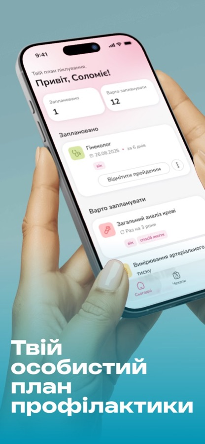
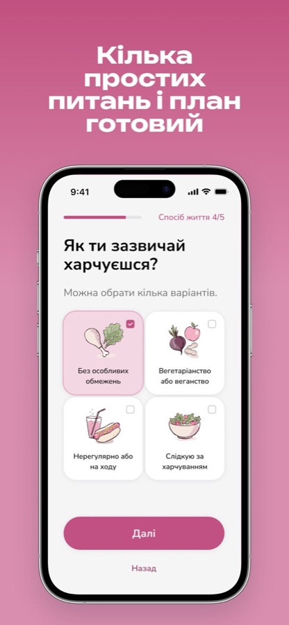
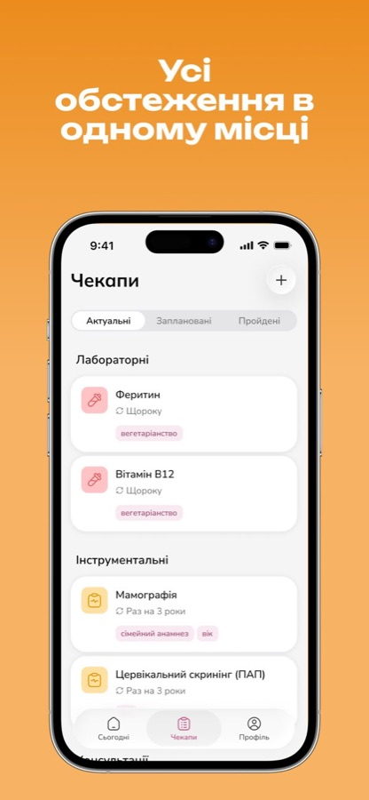
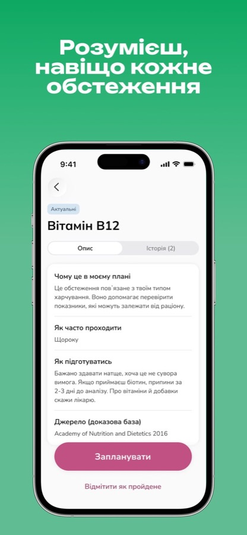
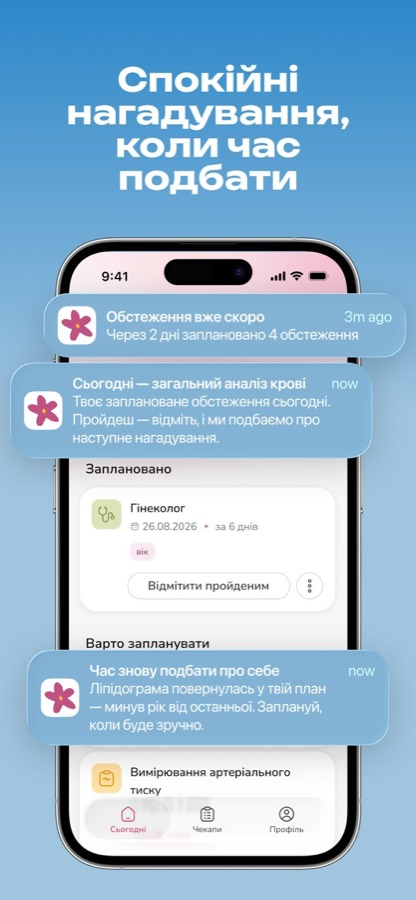
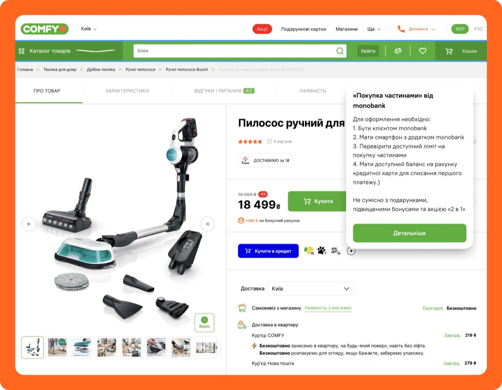
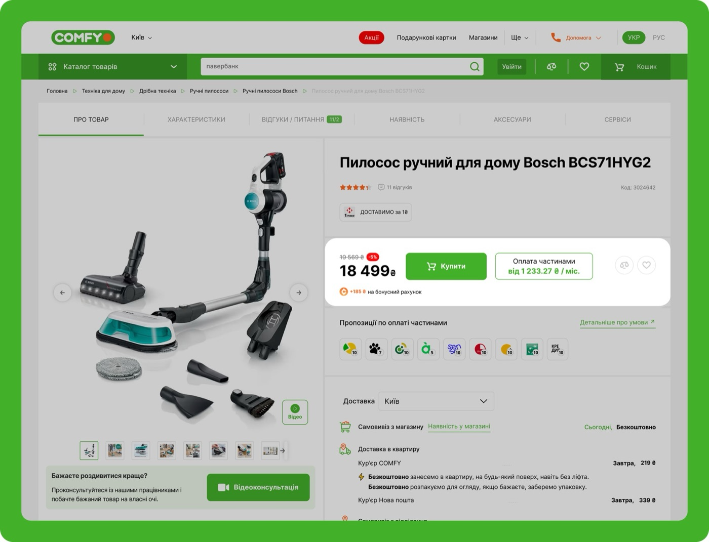

Designed, built, shipped.iOS live · Android in reviewPrevently. From idea to App Store, solo. 
30% → 40%credit order share, business goalComfy. Making credit purchases clear and calm.   BeforeAfter L Lera · design decisionRenamed “Buy on credit” to “Pay in installments”: the word “credit” made people anxious.
Ad Requests · eCPMwhat users check every dayAdtelligent. Reports built around what users check every day. UX designer
“I connected my accounts… and then what?”a user, before the redesignSmart Financial Assistant. From transaction log to assistant. Researcher